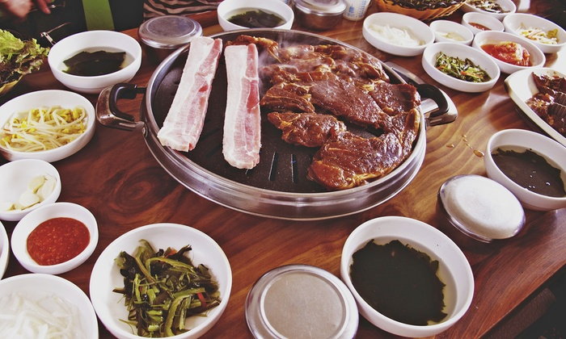

Introducing Responsive Images
Contents of the Talk
- Why use responsive images?
- How do you use responsive images?
- Browser Support
- Can clients actually do this?
- What does this all mean for WA?
What are responsive images and why should we use them?
Don't we already have responsive images?
Current Method
Resizing only.

Current Method
Using two different sized images, hidden w/ css media queries
// for mobile, hides large image and shows small image
.small { display: block; }
.large { display: none; }
// for desktop, hides small image and shows large image
@media (min-width: 992px) {
.small { display: none; }
.large { display: block; }
}
Clarity
Serve different images to different devices
vs
Retina
3 things combined make up responsive image techniques
- <picture> element
- srcset="" attribute
- sizes="" attribute
<picture> support
srcset & sizes support
srcset
Can do two things (do not do at same time)
- Specify widths of images. Width corresponds to px
srcset="img.png 100w, img-med.png 500w, img-lg.png 1000w" - Specify at which pixel density images should be used
srcset="img.png 2x, img-med.png 3x"
sizes
Defines the size images will be rendered at for certain media queries.
sizes="(min-width: 900px) 1000px, // image will be 1000px wide
(max-width: 900px) and (min-width: 400px) 50vw, // at these images img will be 50%
100vw" // default, image will be 100% wideThe browser will decide which image from srcset is the appropriate one to use.
<picture> element
Gives explicit control over which image should be shown in certain media queries
//1200px +
//992px +
//768px +
//767px -
 //fallback
//fallback
By your powers combined...


... I look kind of scary
Quick overview of CSS
Cascading Style Sheets
Without CSS

With CSS

The Cascade
Two things in CSS help determine which style(s) an element inherits.
- Specificity
- Where the style rule lives in the stylesheet file
Specificity

Source: https://stuffandnonsense.co.uk/archives/images/specificitywars-05v2.jpg
Trouble in (CSS) Paradise
!important
#creature.equine.unicorn .body mane hair { color: blue; }
#creature.equine.horse .body mane hair { color: brown; }
#creature.equine.zebra .body mane hair { color: black; }
#creature hair { color: red !important; }#creature.horse hair { color: green !important; }
Long, complex selectors
HTML
CSS
// relatively simple selector
.horse mane {
color: brown;
}
// complex selector
creature#unicorn.equine.unicorn mane {
color: black;
}
The client says hey, all horses and unicorns need white manes.
.equine mane {
color: white !important; :(
}
See the Pen BEM - Holy Selectors Batman by WebAdvanced (@WebAdvanced) on CodePen.
Inline styles
These can only be overwritten with !important
So how do we fix it?
BEM to the rescue!
(Also, just don't use inline CSS.)
Block
Element
Modifier
Why use BEM?
- Modular
- Reusable
- Loosely tied to structure
Naming
Blocks
-
Any combination of letters, digits, and dashes
-
No tag names, no IDs
// wrong div.news-showcase { ... } #news.news-showcase { ... } // correct .news-showcase { ... } - No dependency on any other blocks or elements on the page.
// wrong .homepage .news-showcase { ... } // correct .news-showcase { ... }
Naming
Elements
- Block name + two underscores + element name
.news-showcase__item { } - CSS should not have tag names (e.g. "div") or IDs
// wrong div.news-showcase__item { } - Class should have no dependency on any other blocks or elements on the page.
// wrong
.news-showcase .news-showcase__item { }
// correct
.news-showcase__item { }
Naming
Modifiers
- Block or element name followed by two dashes, then modifier name.
.news-showcase--full-width { } .news-showcase__item--large { } - Keep the original class on the element
- Sometimes modifiers may be a dependency for other elements
.news-showcase__item--large .news-showcase__heading { } // headings inside large showcase item
Naming
Other
- Executing javascript?
//HTML Watch Video//JS $('.js--open-modal').magnificPopup();//No CSS! - IDs can also be used for this, but a class is nice for a reuseable component that has functionality (such as a rotator or modal popup).
BEM with fake code
See the Pen BEM Presentation - HTML by WebAdvanced (@WebAdvanced) on CodePen.
See the Pen BEM Presentation - CSS by WebAdvanced (@WebAdvanced) on CodePen.
SASS Tips
You can group BEM blocks with their elements and modifiers into a tidy package using SASS or LESS.
// The SCSS
.news-showcase {
...
&__item {
...
&--large {
...
.news-showcase__heading {
...
}
}
}
&__heading {
...
}
}
// The Generated CSS
.news-showcase { ... }
.news-showcase__item { ... }
.news-showcase__item--large { ... }
.news-showcase__item--large .news-showcase__heading { ... }
.news-showcase__heading { ... }
General Rules
- Stick to the naming convention
- When using SASS/LESS, only nest classes when necessary
- Avoid IDs/!important in your CSS & inline styles in your HTML
- Keep your CSS markup-agnostic. CSS shouldn't care if it is on a <div> or a <p>
Let's try to avoid this!

Questions?